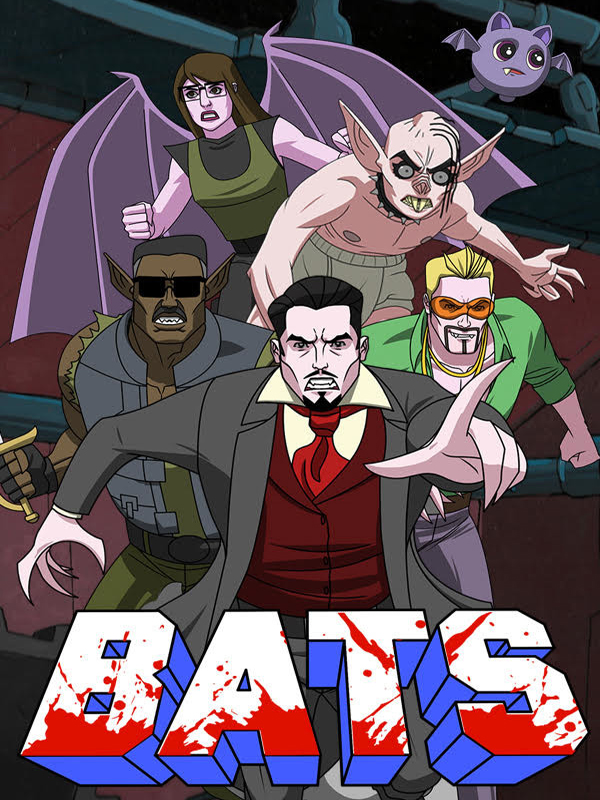

BATS
BATS
Details
|  | |
| Playtime | Not Played |
| Last Activity | Never |
| Added | 2/19/2023 22:25:05 |
| Modified | 2/19/2023 22:25:34 |
| Completion Status | Not Played |
| Library | Amazon Games |
| Source | Amazon |
| Platform | PC (Windows) |
| Release Date | 10/19/2021 |
| Community Score | |
| Critic Score | |
| User Score | |
| Genre | Action Indie |
| Developer | Ritual Games |
| Publisher | One Eyed Robot The MIX Games |
| Feature | Single Player |
| Links | Steam Twitch |
| Tag | |
Description
"Ridiculously over-the-top!"
-Shack News
“Setting itself apart from the stereotypical vampire game.”
-Screen Rant
“Insanely bloody...looks to be an absolute blast!”
-Dread XP
“The bloodiest game I have ever seen!”
-Dr. Otto Von Splatter, hematologist and avid gamer
Based on the coolest animated TV show that never was, BATS stars Count Bloodvayne and the rest of Bloodsucker Anti-Terror Squad as they battle Scorpion Supreme and the ruthless terrorist organization, STING! (Syndicate for Terror and Illegal Non-Government, voted the world’s #1 terrorist organization.) Did you ever want GI Joe with vampires? Well now you can have it, buddy!
BATS is a throwback to the action sidescrollers of the 16-bit era, with a modern twist. It’s a fast-paced, arcade brawler-shooter-slasher that rewards precision play and pixel-perfect timing. Play like a pro or take your time running around killing terrorists, slicing off heads and sucking up blood at your own pace. It’s up to you! Either way, you’re gonna have a bloody good time.
GAMEPLAY
There are five hand-crafted levels of STING’s fortress for the player to explore. Each level is filled with dangerous traps, deadly hazards, and an endless supply of Scorp soldiers to slice and dice into bloody bits.
As players progress through the levels they will collect blood droplets, which can be used to activate super deadly vampire powers, making the wholesale slaughter of disposable soldiers a breeze!
But watch out, there’s still plenty of swinging saw blades, terrorist zombies, and electrocution chambers to navigate. And don’t forget the STING sauna!
CHARACTERS
The Bloodsucker Anti-Terror Squad is a secret government organization that fights crime...one bite at a time! There are five playable characters in the game. Players start as BATS leader, Count Bloodvayne, and unlock the other members of the team as they complete each level.
Count Bloodvayne
This Victorian-era vampire was once a detective for Scotland Yard. While on the hunt for Jack the Ripper, he was bitten by a creature of the night and transformed into Count Bloodvayne, vampire of justice! Count Bloodvayne can transform into a wolf, killing enemies with ease.
Sgt. Sabre
Sabre’s mother was bitten by a vampire when he was in utero. Half human, half vampire, and all muscle, Sgt. Sabre swings his mighty blade to slice terrorists into little meat chunks. When he’s powered up, Sabre spins like a whirlwind to decimate his foes.
Mitzie
Once your average millennial suburban kid, Mitzie’s encounter with an organic, artisanal, hand-crafted protein shake from Bavaria transformed her into a winged bloodsucker of vengeance! Her flying abilities make her the most maneuverable of the team.
Rick Ghastley
Rick was a member of the 90s boy band sensation, Boyz Town. But a run-in with a sexy vampire groupie turned his thirst for love into a thirst for blood! Rick uses a deadly shotgun to blast the bad guys to bits. He’s also working on a comeback album.
Nosferadude
No one knows how old Nosferadude is, or where he comes from, or even if “he” is a he. But one thing is clear, Nosferadude is agile and a dangerous predator. He collects more blood than anyone else on the team, making his vampire rage even more deadly!
Squirt
Every team needs a mascot, and Squirt is the bat with the can-do attitude that makes the team go! Finding Squirt will protect any BATS member from one hit.
Scorpion Supreme
Scorpion Supreme is the ruthless leader of STING, voted the world’s #1 terrorist organization. With pincers for hands and a venomous tail, Scorpion Supreme is Count Bloodvayne’s greatest foe. He also has a terrible temper, always killing his trusted Scorp minions for screwing up.
FEATURES
-Shack News
“Setting itself apart from the stereotypical vampire game.”
-Screen Rant
“Insanely bloody...looks to be an absolute blast!”
-Dread XP
“The bloodiest game I have ever seen!”
-Dr. Otto Von Splatter, hematologist and avid gamer
Based on the coolest animated TV show that never was, BATS stars Count Bloodvayne and the rest of Bloodsucker Anti-Terror Squad as they battle Scorpion Supreme and the ruthless terrorist organization, STING! (Syndicate for Terror and Illegal Non-Government, voted the world’s #1 terrorist organization.) Did you ever want GI Joe with vampires? Well now you can have it, buddy!
BATS is a throwback to the action sidescrollers of the 16-bit era, with a modern twist. It’s a fast-paced, arcade brawler-shooter-slasher that rewards precision play and pixel-perfect timing. Play like a pro or take your time running around killing terrorists, slicing off heads and sucking up blood at your own pace. It’s up to you! Either way, you’re gonna have a bloody good time.
GAMEPLAY
There are five hand-crafted levels of STING’s fortress for the player to explore. Each level is filled with dangerous traps, deadly hazards, and an endless supply of Scorp soldiers to slice and dice into bloody bits.
As players progress through the levels they will collect blood droplets, which can be used to activate super deadly vampire powers, making the wholesale slaughter of disposable soldiers a breeze!
But watch out, there’s still plenty of swinging saw blades, terrorist zombies, and electrocution chambers to navigate. And don’t forget the STING sauna!
CHARACTERS
The Bloodsucker Anti-Terror Squad is a secret government organization that fights crime...one bite at a time! There are five playable characters in the game. Players start as BATS leader, Count Bloodvayne, and unlock the other members of the team as they complete each level.
Count Bloodvayne
This Victorian-era vampire was once a detective for Scotland Yard. While on the hunt for Jack the Ripper, he was bitten by a creature of the night and transformed into Count Bloodvayne, vampire of justice! Count Bloodvayne can transform into a wolf, killing enemies with ease.
Sgt. Sabre
Sabre’s mother was bitten by a vampire when he was in utero. Half human, half vampire, and all muscle, Sgt. Sabre swings his mighty blade to slice terrorists into little meat chunks. When he’s powered up, Sabre spins like a whirlwind to decimate his foes.
Mitzie
Once your average millennial suburban kid, Mitzie’s encounter with an organic, artisanal, hand-crafted protein shake from Bavaria transformed her into a winged bloodsucker of vengeance! Her flying abilities make her the most maneuverable of the team.
Rick Ghastley
Rick was a member of the 90s boy band sensation, Boyz Town. But a run-in with a sexy vampire groupie turned his thirst for love into a thirst for blood! Rick uses a deadly shotgun to blast the bad guys to bits. He’s also working on a comeback album.
Nosferadude
No one knows how old Nosferadude is, or where he comes from, or even if “he” is a he. But one thing is clear, Nosferadude is agile and a dangerous predator. He collects more blood than anyone else on the team, making his vampire rage even more deadly!
Squirt
Every team needs a mascot, and Squirt is the bat with the can-do attitude that makes the team go! Finding Squirt will protect any BATS member from one hit.
Scorpion Supreme
Scorpion Supreme is the ruthless leader of STING, voted the world’s #1 terrorist organization. With pincers for hands and a venomous tail, Scorpion Supreme is Count Bloodvayne’s greatest foe. He also has a terrible temper, always killing his trusted Scorp minions for screwing up.
FEATURES
- Five levels to master
- Five characters to unlock
- Boss Rush mode - test your skillz!
- Speedrun mode - go for the record!
- Realistic BloodEFX technology
- Historically accurate vampire powers
- Hilarious and unfortunate deaths
- Thousands of screams